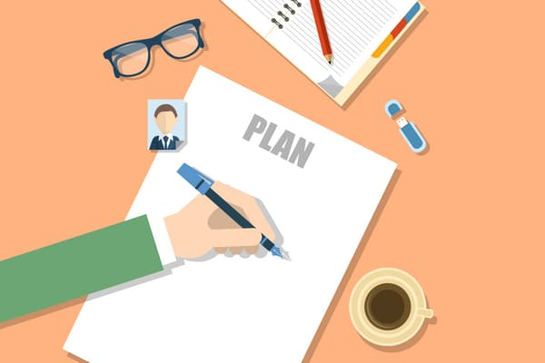
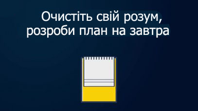

- Розбиття
- Готуйтеся з вечора
- Візьміть листок і ручку.
- Запишіть три справи, які ви добре зробили сьогодні, і три справи, з якими потрібно розібратися завтра (будьте конструктивні, а не песимістичні).
- Нижче запишіть одне завершене сьогодні справа, яке дало найбільшу віддачу. А потім запишіть таке ж важливе одна справа на завтра.
- Займатися справою рівно стільки, скільки ви запланували.
- Знайдіть одну свою справу.
- Подумайте про мотивацію
- Не бійтеся невдалої спроби
- Нагороджуйте себе за успішно виконану работу
- Робіть перерви
- Приберіть все, що вас відволікає
- Вимкніть звук мобільного телефону
"Розбивайте справу на шматочки і робіть по одному за раз."
Наш мозок від природи не здатний відразу зв'язати результат і тривалий напруга, особливо якщо ми далекі від поставленої мети. Найчастіше ми стикаємося з внутрішніми сумнівами, і в першу чергу саме страх заважає нам почати.
Наш мозок від природи не здатний відразу зв'язати результат і тривалий напруга, особливо якщо ми далекі від поставленої мети. Найчастіше ми стикаємося з внутрішніми сумнівами, і в першу чергу саме страх заважає нам почати.

Трюк в тому, що потрібно менше думати і розбивати справу на невеликі дії, поки не позбудетеся від страху почати.
Цей найпростіший лайфхак - планувати свій день - може позбавити вас від прокрастинації, до того ж на підготовку потрібно менше п'яти хвилин.

Переможете свій страх помилитися. Найчастіше ми досягаємо бажаного тільки шляхом проб і помилок. Удосконалюючи наші спроби з кожним разом, ми тим самим робимо можливим вирішення проблеми. Провал змушує нас шукати інші шляхи, бути креативніше і знайти краще рішення, на яке ми тільки здатні.
З іншого боку, якщо ви дійсно не готові виконати це завдання або ви вважаєте, що вам це не потрібно, ви можете відмовитися. Важливо, щоб до такого висновку ви дійшли з власної волі, спокійно зваживши всі «за» і «проти».
З іншого боку, якщо ви дійсно не готові виконати це завдання або ви вважаєте, що вам це не потрібно, ви можете відмовитися. Важливо, щоб до такого висновку ви дійшли з власної волі, спокійно зваживши всі «за» і «проти».
Тепер у вас є всі умови для перемоги над прокрастинація.Станьте швидше, краще, сильніше!